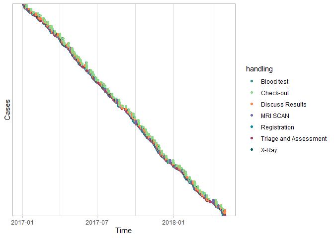

processmapR is a R package for creating process maps. Part of the bupaR eco-system for business process analysis.
Installation
You can install processmapR from CRAN with:
install.packages("processmapR")Development Version
You can install the development version of processmapR from GitHub with:
# install.packages("devtools")
devtools::install_github("bupaverse/processmapR")Example
The bupaR Documentation website contains more details on creating process maps using processmapR.
library(processmapR)
#>
#> Attaching package: 'processmapR'
#> The following object is masked from 'package:stats':
#>
#> frequency
library(bupaR)
#>
#> Attaching package: 'bupaR'
#> The following object is masked from 'package:stats':
#>
#> filter
#> The following object is masked from 'package:utils':
#>
#> timestamp
# Process map
patients %>%
process_map()
#> PhantomJS not found. You can install it with webshot::install_phantomjs(). If it is installed, please make sure the phantomjs executable can be found via the PATH variable.
# Dotted chart
patients %>%
dotted_chart(x = "absolute", sort = "start")